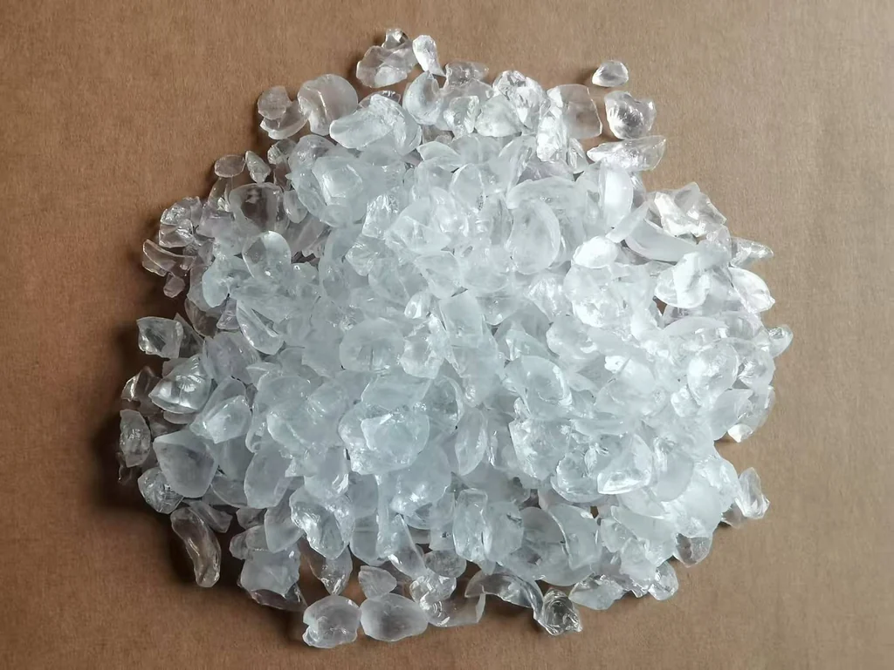
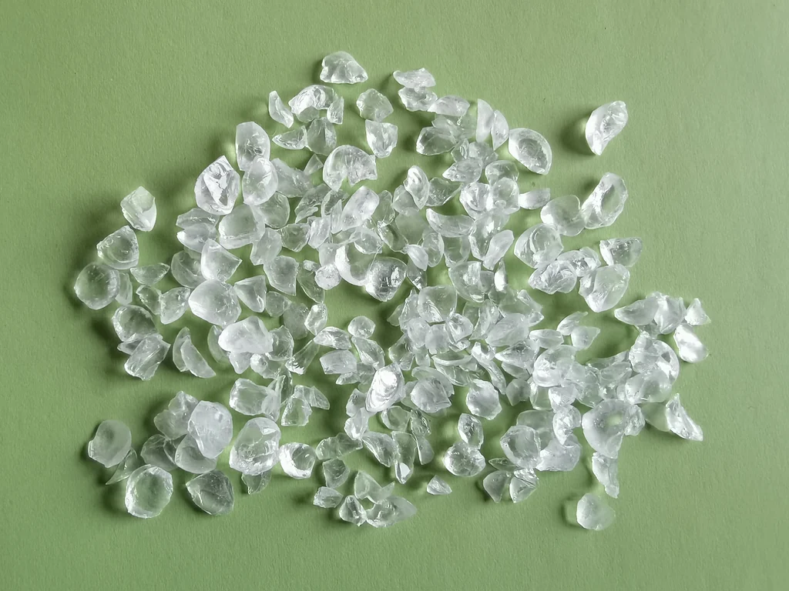
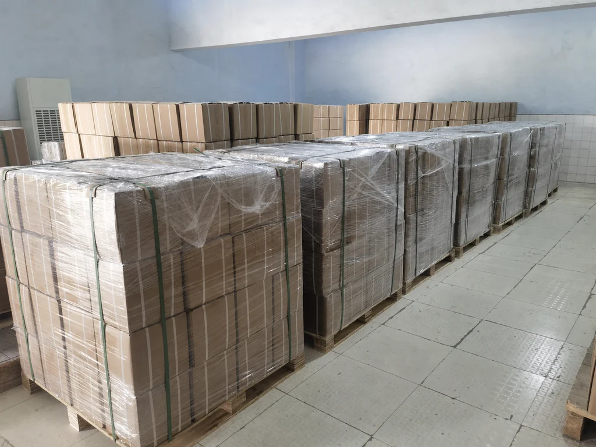
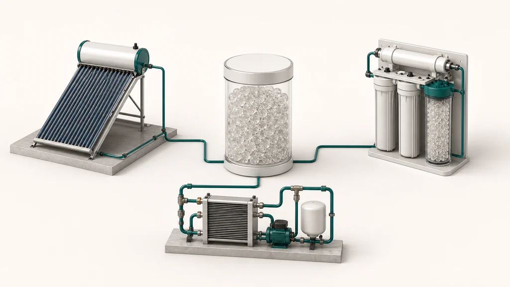
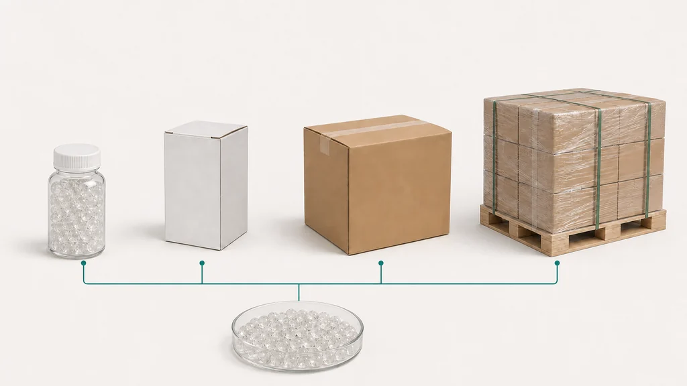

Siliphos balls
19 mm
Yuchen Water · OEM/ODM · specialty filter media
Siliphos balls — specialty filter media. polyphosphate · Siliphos balls Ø19 mm, Ø10 mm, Ø3–8 mm; broken particles 6–12 mm / 4–10 mm; powder. Specifications may vary by selected configuration. Please confirm final requirements before quotation.

01 · Siliphos balls · polyphosphate
Siliphos balls — specialty filter media. polyphosphate · Siliphos balls Ø19 mm, Ø10 mm, Ø3–8 mm; broken particles 6–12 mm / 4–10 mm; powder. Specifications may vary by selected configuration. Please confirm final requirements before quotation.



02 · Siliphos balls · broken particles · powder
Specifications may vary by selected configuration. Please confirm final requirements before quotation.
03 · Application · scale inhibitor
Application: solar water heating · water purification · equipment water circuits. Specifications may vary by selected configuration. Please confirm final requirements before quotation.

Specifications may vary by selected configuration. Please confirm final requirements before quotation.
Specifications may vary by selected configuration. Please confirm final requirements before quotation.
Specifications may vary by selected configuration. Please confirm final requirements before quotation.
04 · technical selection guide
Specifications may vary by selected configuration. Please confirm final requirements before quotation.
05 · OEM/ODM
OEM/ODM: wood pallet · master carton · small boxes · small bottles. Specifications may vary by selected configuration. Please confirm final requirements before quotation.

06 · OEM/ODM · wood pallet · master carton
Yuchen Water · OEM/ODM · specialty filter media. Specifications may vary by selected configuration. Please confirm final requirements before quotation.
Yuchen Water · OEM/ODM · specialty filter media. Specifications may vary by selected configuration. Please confirm final requirements before quotation.
OEM/ODM: wood pallet · master carton · small boxes · small bottles. Specifications may vary by selected configuration. Please confirm final requirements before quotation.
07 · Buyer FAQ
Specifications may vary by selected configuration. Please confirm final requirements before quotation.
Siliphos balls — specialty filter media. polyphosphate · Siliphos balls Ø19 mm, Ø10 mm, Ø3–8 mm; broken particles 6–12 mm / 4–10 mm; powder. Specifications may vary by selected configuration. Please confirm final requirements before quotation.
H₂O · pH · TDS · Ca²⁺ · Application · Configuration requirements. Specifications may vary by selected configuration. Please confirm final requirements before quotation.
OEM/ODM: wood pallet · master carton · small boxes · small bottles. Specifications may vary by selected configuration. Please confirm final requirements before quotation.